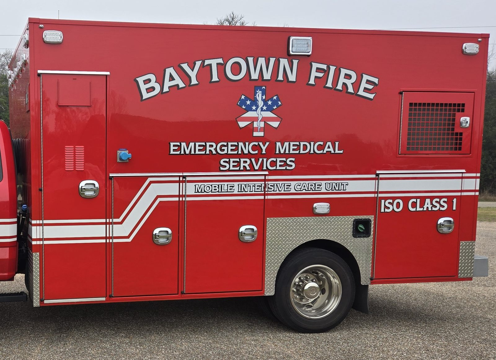
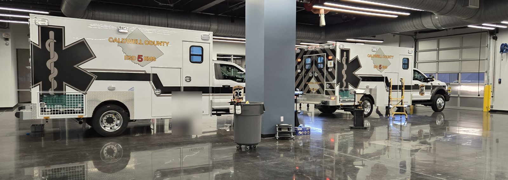
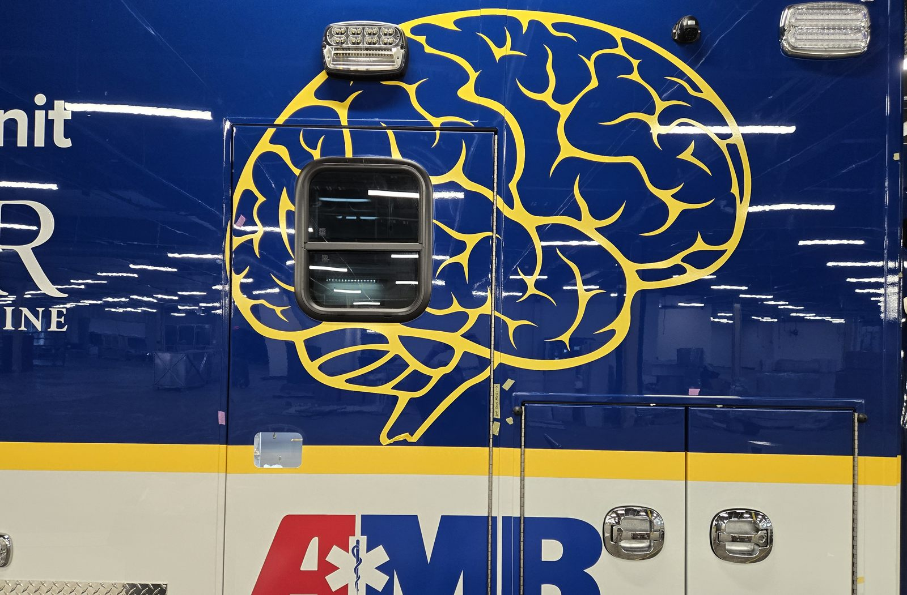
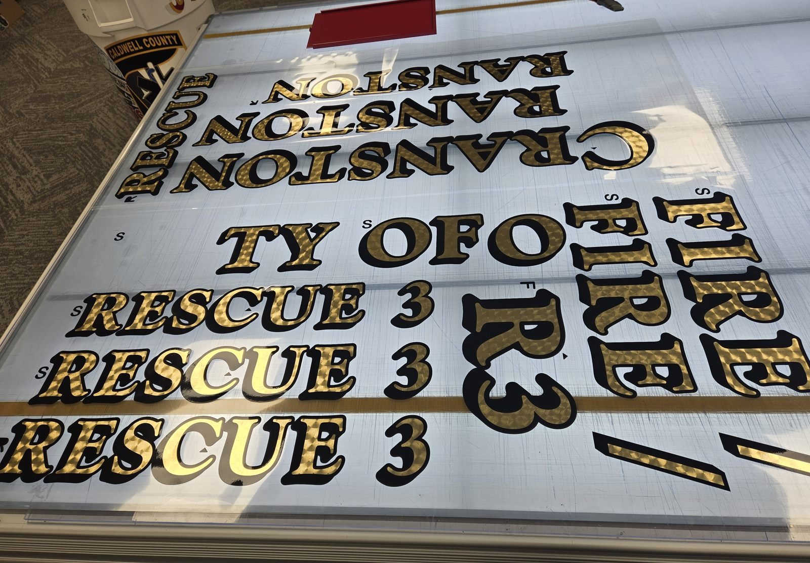
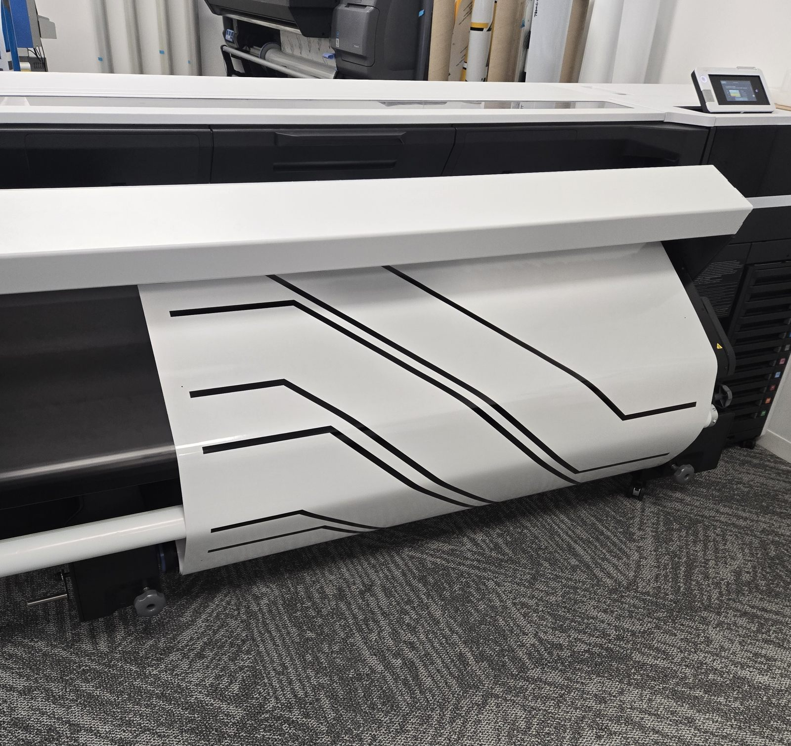
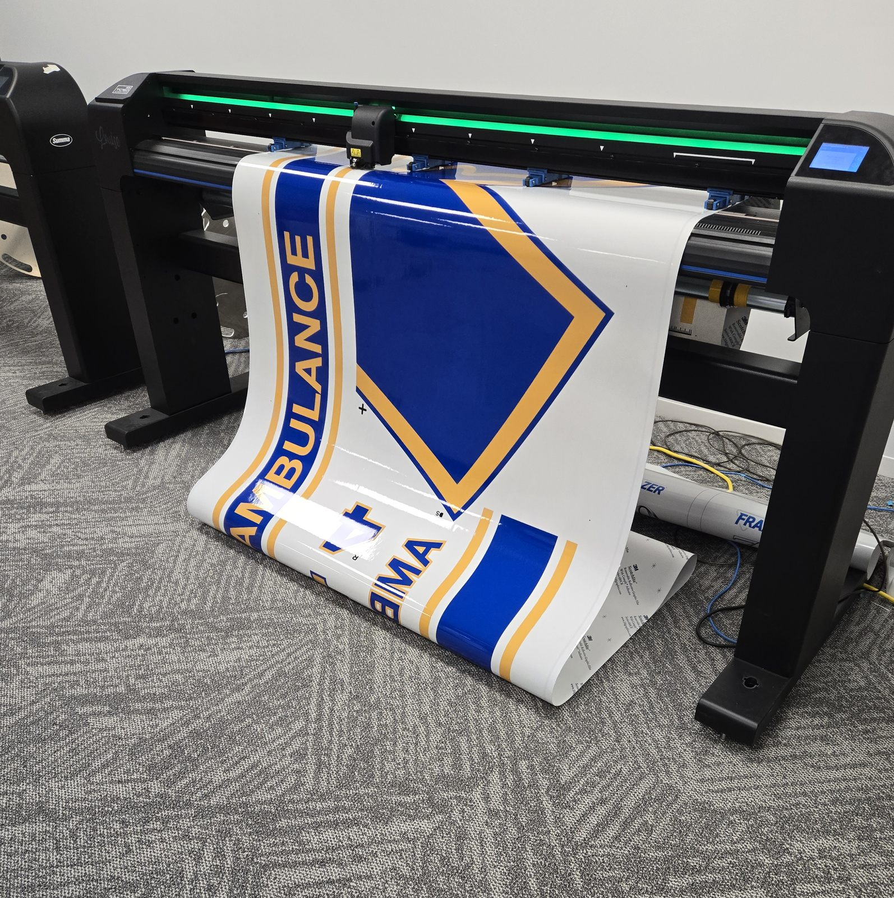

Graphic ProductionFrom artwork to application.
I work primarily in graphics production, helping turn team-developed, client-reviewed designs into finished work. I also contribute during design and installation. This selection focuses on emergency vehicle projects.
Making designs work in the real world.
I contribute throughout the process, with most of my time spent producing the graphics that turn approved artwork into finished applications.
Design collaboration
Our team develops the artwork with input from a panel of clients. I contribute ideas and feedback during the design process.
Production
This is my main responsibility: preparing and producing the physical graphics using production materials, lettering, and equipment.
Installation
I also contribute to applying the graphics, helping the designs move from production into the finished vehicle.
Production in context.
Selected finished ambulance projects, showing how artwork becomes a complete vehicle graphic application.

Baytown Fire ambulance
Finished fire department vehicle graphics, produced through a collaborative team process.

Caldwell ambulances
Graphics and lettering applied across two finished vehicles.

Val Verde ambulance
Completed graphics and lettering on a dark vehicle surface.

M Unit ambulance
Detailed illustrated graphics brought into a finished vehicle application.
Behind the finished graphics.
These photos show the equipment, materials, and in-progress work that form the core of my day-to-day responsibilities.

Cranston lettering
Large-format emergency vehicle lettering prepared for application.

Making graphics
An in-progress view of graphics being prepared using production equipment.

Summa cutter
Graphics material moving through a cutter as part of the production workflow.
All work shown is part of a team and client-reviewed process. My main contribution is graphics production.